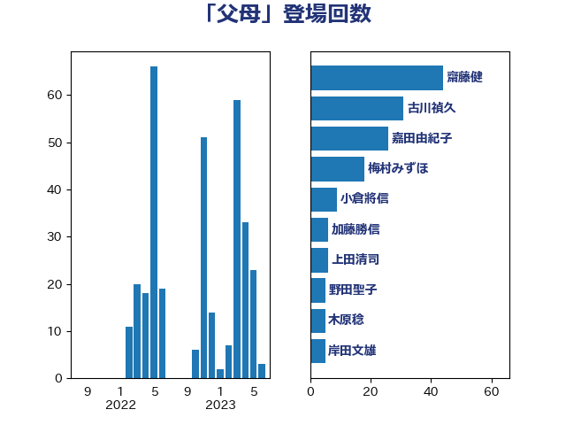

単語「父母」

| 齋藤健 | 自由民主党 | 44 回 |
| 古川禎久 | 自由民主党 | 31 回 |
| 嘉田由紀子 | 無所属 | 26 回 |
| 梅村みずほ | 日本維新の会 | 18 回 |
| 小倉將信 | 自由民主党 | 9 回 |
| 加藤勝信 | 自由民主党 | 6 回 |
| 上田清司 | 国民民主党 | 6 回 |
| 野田聖子 | 自由民主党 | 5 回 |
| 木原稔 | 自由民主党 | 5 回 |
| 岸田文雄 | 自由民主党 | 5 回 |
| 高見康裕 | 自由民主党 | 4 回 |
| 三浦信祐 | 公明党 | 4 回 |
| 葉梨康弘 | 自由民主党 | 3 回 |
| 田村智子 | 日本共産党 | 3 回 |
| 浅野哲 | 国民民主党 | 3 回 |
| 本村伸子 | 日本共産党 | 3 回 |
| 打越さく良 | 立憲民主党 | 3 回 |
| 門山宏哲 | 自由民主党 | 2 回 |
| 穀田恵二 | 日本共産党 | 2 回 |
| 稲富修二 | 立憲民主党 | 2 回 |
| 牧山ひろえ | 立憲民主党 | 2 回 |
| 津島淳 | 自由民主党 | 2 回 |
| 永岡桂子 | 自由民主党 | 2 回 |
| 松野博一 | 自由民主党 | 2 回 |
| 早稲田ゆき | 立憲民主党 | 2 回 |
| 堤かなめ | 立憲民主党 | 2 回 |
| 伊藤孝恵 | 国民民主党 | 2 回 |
| 丹羽秀樹 | 自由民主党 | 2 回 |
| 高橋千鶴子 | 日本共産党 | 1 回 |
| 高木かおり | 日本維新の会 | 1 回 |
| 鎌田さゆり | 立憲民主党 | 1 回 |
| 赤嶺政賢 | 日本共産党 | 1 回 |
| 秋本真利 | 無所属 | 1 回 |
| 福島みずほ | 社会民主党 | 1 回 |
| 福山哲郎 | 立憲民主党 | 1 回 |
| 田中健 | 国民民主党 | 1 回 |
| 牧義夫 | 立憲民主党 | 1 回 |
| 漆間譲司 | 日本維新の会 | 1 回 |
| 浜田聡 | NHK党 | 1 回 |
| 広瀬めぐみ | 自由民主党 | 1 回 |
| 川田龍平 | 立憲民主党 | 1 回 |
| 山下貴司 | 自由民主党 | 1 回 |
| 小西洋之 | 立憲民主党 | 1 回 |
| 小川淳也 | 立憲民主党 | 1 回 |
| 安江伸夫 | 公明党 | 1 回 |
| 吉田統彦 | 立憲民主党 | 1 回 |
| 勝部賢志 | 立憲民主党 | 1 回 |
| 佐藤英道 | 公明党 | 1 回 |
| 佐々木さやか | 公明党 | 1 回 |
| 中谷一馬 | 立憲民主党 | 1 回 |